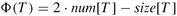
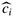
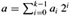
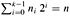

|
|
< Day Day Up > |
|
In some applications, we do not know in advance how many objects will be stored in a table. We might allocate space for a table, only to find out later that it is not enough. The table must then be reallocated with a larger size, and all objects stored in the original table must be copied over into the new, larger table. Similarly, if many objects have been deleted from the table, it may be worthwhile to reallocate the table with a smaller size. In this section, we study this problem of dynamically expanding and contracting a table. Using amortized analysis, we shall show that the amortized cost of insertion and deletion is only O(1), even though the actual cost of an operation is large when it triggers an expansion or a contraction. Moreover, we shall see how to guarantee that the unused space in a dynamic table never exceeds a constant fraction of the total space.
We assume that the dynamic table supports the operations TABLE-INSERT and TABLE-DELETE. TABLE-INSERT inserts into the table an item that occupies a single slot, that is, a space for one item. Likewise, TABLE-DELETE can be thought of as removing an item from the table, thereby freeing a slot. The details of the data-structuring method used to organize the table are unimportant; we might use a stack (Section 10.1), a heap (Chapter 6), or a hash table (Chapter 11). We might also use an array or collection of arrays to implement object storage, as we did in Section 10.3.
We shall find it convenient to use a concept introduced in our analysis of hashing (Chapter 11). We define the load factor α (T) of a nonempty table T to be the number of items stored in the table divided by the size (number of slots) of the table. We assign an empty table (one with no items) size 0, and we define its load factor to be 1. If the load factor of a dynamic table is bounded below by a constant, the unused space in the table is never more than a constant fraction of the total amount of space.
We start by analyzing a dynamic table in which only insertions are performed. We then consider the more general case in which both insertions and deletions are allowed.
Let us assume that storage for a table is allocated as an array of slots. A table fills up when all slots have been used or, equivalently, when its load factor is 1.[1] In some software environments, if an attempt is made to insert an item into a full table, there is no alternative but to abort with an error. We shall assume, however, that our software environment, like many modern ones, provides a memory-management system that can allocate and free blocks of storage on request. Thus, when an item is inserted into a full table, we can expand the table by allocating a new table with more slots than the old table had. Because we always need the table to reside in contiguous memory, we must allocate a new array for the larger table and then copy items from the old table into the new table.
A common heuristic is to allocate a new table that has twice as many slots as the old one. If only insertions are performed, the load factor of a table is always at least 1/2, and thus the amount of wasted space never exceeds half the total space in the table.
In the following pseudocode, we assume that T is an object representing the table. The field table[T] contains a pointer to the block of storage representing the table. The field num[T] contains the number of items in the table, and the field size[T] is the total number of slots in the table. Initially, the table is empty: num[T] = size[T ] = 0.
TABLE-INSERT (T , x) 1 if size[T ] = 0 2 then allocate table[T] with 1 slot 3 size[T] ← 1 4 if num[T] = size[T] 5 then allocate new-table with 2 · size[T] slots 6 insert all items in table[T] into new-table 7 free table[T] 8 table[T] → new-table 9 size[T] → 2 · size[T] 10 insert x into table[T] 11 num[T] → num[T] + 1
Notice that we have two "insertion" procedures here: the TABLE-INSERT procedure itself and the elementary insertion into a table in lines 6 and 10. We can analyze the running time of TABLE-INSERT in terms of the number of elementary insertions by assigning a cost of 1 to each elementary insertion. We assume that the actual running time of TABLE-INSERT is linear in the time to insert individual items, so that the overhead for allocating an initial table in line 2 is constant and the overhead for allocating and freeing storage in lines 5 and 7 is dominated by the cost of transferring items in line 6. We call the event in which the then clause in lines 5-9 is executed an expansion.
Let us analyze a sequence of n TABLE-INSERT operations on an initially empty table. What is the cost ci of the ith operation? If there is room in the current table (or if this is the first operation), then ci = 1, since we need only perform the one elementary insertion in line 10. If the current table is full, however, and an expansion occurs, then ci = i: the cost is 1 for the elementary insertion in line 10 plus i - 1 for the items that must be copied from the old table to the new table in line 6. If n operations are performed, the worst-case cost of an operation is O(n), which leads to an upper bound of O(n2) on the total running time for n operations.
This bound is not tight, because the cost of expanding the table is not borne often in the course of n TABLE-INSERT operations. Specifically, the ith operation causes an expansion only when i - 1 is an exact power of 2. The amortized cost of an operation is in fact O(1), as we can show using aggregate analysis. The cost of the ith operation is
The total cost of n TABLE-INSERT operations is therefore
since there are at most n operations that cost 1 and the costs of the remaining operations form a geometric series. Since the total cost of n TABLE-INSERT operations is 3n, the amortized cost of a single operation is 3.
By using the accounting method, we can gain some feeling for why the amortized cost of a TABLE-INSERT operation should be 3. Intuitively, each item pays for 3 elementary insertions: inserting itself in the current table, moving itself when the table is expanded, and moving another item that has already been moved once when the table is expanded. For example, suppose that the size of the table is m immediately after an expansion. Then, the number of items in the table is m/2, and the table contains no credit. We charge 3 dollars for each insertion. The elementary insertion that occurs immediately costs 1 dollar. Another dollar is placed as credit on the item inserted. The third dollar is placed as credit on one of the m/2 items already in the table. Filling the table requires m/2 - 1 additional insertions, and thus, by the time the table contains m items and is full, each item has a dollar to pay for its reinsertion during the expansion.
The potential method can also be used to analyze a sequence of n TABLE-INSERT operations, and we shall use it in Section 17.4.2 to design a TABLE-DELETE operation that has O(1) amortized cost as well. We start by defining a potential function Φ that is 0 immediately after an expansion but builds to the table size by the time the table is full, so that the next expansion can be paid for by the potential. The function
| (17.5) |  |
is one possibility. Immediately after an expansion, we have num[T] = size[T]/2, and thus Φ(T) = 0, as desired. Immediately before an expansion, we have num[T] = size[T], and thus Φ(T) = num[T], as desired. The initial value of the potential is 0, and since the table is always at least half full, num[T] ≥ size[T]/2, which implies that Φ(T) is always nonnegative. Thus, the sum of the amortized costs of n TABLE-INSERT operations is an upper bound on the sum of the actual costs.
To analyze the amortized cost of the ith TABLE-INSERT operation, we let numi denote the number of items stored in the table after the ith operation, sizei denote the total size of the table after the ith operation, and Φi denote the potential after the ith operation. Initially, we have num0 = 0, size0 = 0, and Φ0 = 0.
If the ith TABLE-INSERT operation does not trigger an expansion, then we have sizei = sizei-1 and the amortized cost of the operation is
|
|
= |
ci + Φi - Φi-1 |
|
= |
1 + (2 · numi -sizei) - (2 · numi-1 -sizei-1) |
|
|
= |
1 + (2 · numi -sizei) - (2(numi -1) - sizei) |
|
|
= |
3. |
If the ith operation does trigger an expansion, then we have sizei = 2 · sizei-1 and sizei-1 = numi-1 = numi-1, which implies that sizei = 2 · (numi-1). Thus, the amortized cost of the operation is
|
|
= |
ci + Φi - Φi-1 |
|
= |
numi + (2 · numi - sizei) - (2 · numi-1 - sizei-1) |
|
|
= |
numi +(2 · numi -2 · (numi - 1)) - (2(numi - 1) - (numi - 1)) |
|
|
= |
numi + 2 - (numi - 1) |
|
|
= |
3. |
Figure 17.3 plots the values of numi, sizei, and Φi against i. Notice how the potential builds to pay for the expansion of the table.
To implement a TABLE-DELETE operation, it is simple enough to remove the specified item from the table. It is often desirable, however, to contract the table when the load factor of the table becomes too small, so that the wasted space is not exorbitant. Table contraction is analogous to table expansion: when the number of items in the table drops too low, we allocate a new, smaller table and then copy the items from the old table into the new one. The storage for the old table can then be freed by returning it to the memory-management system. Ideally, we would like to preserve two properties:
the load factor of the dynamic table is bounded below by a constant, and
the amortized cost of a table operation is bounded above by a constant.
We assume that cost can be measured in terms of elementary insertions and deletions.
A natural strategy for expansion and contraction is to double the table size when an item is inserted into a full table and halve the size when a deletion would cause the table to become less than half full. This strategy guarantees that the load factor of the table never drops below 1/2, but unfortunately, it can cause the amortized cost of an operation to be quite large. Consider the following scenario. We perform n operations on a table T , where n is an exact power of 2. The first n/2 operations are insertions, which by our previous analysis cost a total of Φ(n). At the end of this sequence of insertions, num[T] = size[T] = n/2. For the second n/2 operations, we perform the following sequence:
I, D, D, I, I, D, D, I, I, ... ,
where I stands for an insertion and D stands for a deletion. The first insertion causes an expansion of the table to size n. The two following deletions cause a contraction of the table back to size n/2. Two further insertions cause another expansion, and so forth. The cost of each expansion and contraction is Θ(n), and there are Θ(n) of them. Thus, the total cost of the n operations is Θ(n2), and the amortized cost of an operation is Θ(n).
The difficulty with this strategy is obvious: after an expansion, we do not perform enough deletions to pay for a contraction. Likewise, after a contraction, we do not perform enough insertions to pay for an expansion.
We can improve upon this strategy by allowing the load factor of the table to drop below 1/2. Specifically, we continue to double the table size when an item is inserted into a full table, but we halve the table size when a deletion causes the table to become less than 1/4 full, rather than 1/2 full as before. The load factor of the table is therefore bounded below by the constant 1/4. The idea is that after an expansion, the load factor of the table is 1/2. Thus, half the items in the table must be deleted before a contraction can occur, since contraction does not occur unless the load factor would fall below 1/4. Likewise, after a contraction, the load factor of the table is also 1/2. Thus, the number of items in the table must be doubled by insertions before an expansion can occur, since expansion occurs only when the load factor would exceed 1.
We omit the code for TABLE-DELETE, since it is analogous to TABLE-INSERT. It is convenient to assume for analysis, however, that if the number of items in the table drops to 0, the storage for the table is freed. That is, if num[T] = 0, then size[T] = 0.
We can now use the potential method to analyze the cost of a sequence of n TABLE-INSERT and TABLE-DELETE operations. We start by defining a potential function Φ that is 0 immediately after an expansion or contraction and builds as the load factor increases to 1 or decreases to 1/4. Let us denote the load factor of a nonempty table T by α(T) = num[T]/ size[T]. Since for an empty table, num[T] = size[T] = 0 and α[T] = 1, we always have num[T] = α(T) · size[T], whether the table is empty or not. We shall use as our potential function
Observe that the potential of an empty table is 0 and that the potential is never negative. Thus, the total amortized cost of a sequence of operations with respect to Φ is an upper bound on the actual cost of the sequence.
Before proceeding with a precise analysis, we pause to observe some properties of the potential function. Notice that when the load factor is 1/2, the potential is 0. When the load factor is 1, we have size[T] = num[T], which implies Φ(T) = num[T], and thus the potential can pay for an expansion if an item is inserted. When the load factor is 1/4, we have size[T] = 4 · num[T], which implies Φ(T) = num[T], and thus the potential can pay for a contraction if an item is deleted. Figure 17.4 illustrates how the potential behaves for a sequence of operations.
To analyze a sequence of n TABLE-INSERT and TABLE-DELETE operations, we let ci denote the actual cost of the ith operation,  denote its amortized cost with respect to Φ, numi denote the number of items stored in the table after the ith operation, sizei denote the total size of the table after the ith operation, αi denote the load factor of the table after the ith operation, and Φi denote the potential after the ith operation. Initially, num0 = 0, size0 = 0, α0 = 1, and Φ0 = 0.
denote its amortized cost with respect to Φ, numi denote the number of items stored in the table after the ith operation, sizei denote the total size of the table after the ith operation, αi denote the load factor of the table after the ith operation, and Φi denote the potential after the ith operation. Initially, num0 = 0, size0 = 0, α0 = 1, and Φ0 = 0.
We start with the case in which the ith operation is TABLE-INSERT. The analysis is identical to that for table expansion in Section 17.4.1 if αi-1 ≥ 1/2. Whether the table expands or not, the amortized cost  of the operation is at most 3. If αi-1 < 1/2, the table cannot expand as a result of the operation, since expansion occurs only when αi-1 = 1. If αi < 1/2 as well, then the amortized cost of the ith operation is
of the operation is at most 3. If αi-1 < 1/2, the table cannot expand as a result of the operation, since expansion occurs only when αi-1 = 1. If αi < 1/2 as well, then the amortized cost of the ith operation is
|
|
= |
ci + Φi - Φi-1 |
|
= |
1 + (sizei/2 - numi) - (sizei-1/2 - numi-1) |
|
|
= |
1 + (sizei/2 - numi) - (sizei/2 - (numi - 1)) |
|
|
= |
0. |
If αi-1 < 1/2 but αi ≥ 1/2, then
|
 |
= |
ci+Φi-Φi-1 |
|
= |
1 + (2 · numi - sizei) - (sizei-1 /2 - numi-1) |
|
|
= |
1 + (2(numi-1 +1) - sizei-1) - (sizei-1/2 - numi-1) |
|
|
= |
3 · numi-1 - 3/2; sizei-1 +3 |
|
|
= |
3αi-1 sizei-1 - 3/2 sizei-1 +3 |
|
|
< |
3/2 sizei-1 - 3/2 sizei-1 +3 |
|
|
= |
3. |
Thus, the amortized cost of a TABLE-INSERT operation is at most 3.
We now turn to the case in which the ith operation is TABLE-DELETE. In this case, numi = numi-1 -1. If ai-1 < 1/2, then we must consider whether the operation causes a contraction. If it does not, then sizei = sizei-1 and the amortized cost of the operation is
|
|
= |
ci + Φi - Φi-1 |
|
= |
1 + (sizei /2 - numi) - (sizei-1 /2 - numi-1) |
|
|
= |
1 + (sizei /2 - numi) - (sizei /2 - (numi +1)) |
|
|
= |
2. |
If αi-1 < 1/2 and the ith operation does trigger a contraction, then the actual cost of the operation is ci = numi +1, since we delete one item and move numi items. We have sizei/2 = sizei-1/4 = numi-1 = numi +1, and the amortized cost of the operation is
|
|
= |
ci + Φi - Φi-1 |
|
= |
(numi +1) + (sizei/2 - numi) (sizei-1/2 - numi-1) = (numi +1) + ((numi +1) - numi) - ((2 · numi +2) - (numi +1)) |
|
|
= |
1. |
When the ith operation is a TABLE-DELETE and αi-1 ≥ 1/2, the amortized cost is also bounded above by a constant. The analysis is left as Exercise 17.4-2.
In summary, since the amortized cost of each operation is bounded above by a constant, the actual time for any sequence of n operations on a dynamic table is O(n).
Suppose that we wish to implement a dynamic, open-address hash table. Why might we consider the table to be full when its load factor reaches some value α that is strictly less than 1? Describe briefly how to make insertion into a dynamic, open-address hash table run in such a way that the expected value of the amortized cost per insertion is O(1). Why is the expected value of the actual cost per insertion not necessarily O(1) for all insertions?
Show that if αi-1 ≥ 1/2 and the ith operation on a dynamic table is TABLE-DELETE, then the amortized cost of the operation with respect to the potential function (17.6) is bounded above by a constant.
Suppose that instead of contracting a table by halving its size when its load factor drops below 1/4, we contract it by multiplying its size by 2/3 when its load factor drops below 1/3. Using the potential function
Φ(T) = |2 · num[T] - size[T]| ,
show that the amortized cost of a TABLE-DELETE that uses this strategy is bounded above by a constant.
Chapter 30 examines an important algorithm called the Fast Fourier Transform, or FFT. The first step of the FFT algorithm performs a bit-reversal permutation on an input array A[0 ‥ n - 1] whose length is n = 2k for some nonnegative integer k. This permutation swaps elements whose indices have binary representations that are the reverse of each other.
We can express each index a as a k-bit sequence 〈ak-1, ak-2, ..., a0〉, where . We define
revk(〈ak-1, ak-2, ..., a0〉) = 〈a0, a1, ..., ak-1〉;
thus,
For example, if n = 16 (or, equivalently, k = 4), then revk(3) = 12, since the 4-bit representation of 3 is 0011, which when reversed gives 1100, the 4-bit representation of 12.
Given a function revk that runs in Φ(k) time, write an algorithm to perform the bit-reversal permutation on an array of length n = 2k in O(nk) time.
We can use an algorithm based on an amortized analysis to improve the running time of the bit-reversal permutation. We maintain a "bit-reversed counter" and a procedure BIT-REVERSED-INCREMENT that, when given a bit-reversed-counter value a, produces revk(revk(a) + 1). If k = 4, for example, and the bit-reversed counter starts at 0, then successive calls to BIT-REVERSED-INCREMENT produce the sequence
0000, 1000, 0100, 1100, 0010, 1010, ... = 0, 8, 4, 12, 2, 10, ... .
Assume that the words in your computer store k-bit values and that in unit time, your computer can manipulate the binary values with operations such as shifting left or right by arbitrary amounts, bitwise-AND, bitwise-OR, etc. Describe an implementation of the BIT-REVERSED-INCREMENT procedure that allows the bit-reversal permutation on an n-element array to be performed in a total of O(n) time.
Suppose that you can shift a word left or right by only one bit in unit time. Is it still possible to implement an O(n)-time bit-reversal permutation?
Binary search of a sorted array takes logarithmic search time, but the time to insert a new element is linear in the size of the array. We can improve the time for insertion by keeping several sorted arrays.
Specifically, suppose that we wish to support SEARCH and INSERT on a set of n elements. Let k = ⌈lg(n + 1)⌉, and let the binary representation of n be 〈nk-1, nk-2, ..., n0〉. We have k sorted arrays A0, A1, ..., Ak-1, where for i = 0, 1, ..., k - 1, the length of array Ai is 2i. Each array is either full or empty, depending on whether ni = 1 or ni = 0, respectively. The total number of elements held in all k arrays is therefore . Although each individual array is sorted, there is no particular relationship between elements in different arrays.
Describe how to perform the SEARCH operation for this data structure. Analyze its worst-case running time.
Describe how to insert a new element into this data structure. Analyze its worst-case and amortized running times.
Discuss how to implement DELETE.
Consider an ordinary binary search tree augmented by adding to each node x the field size[x] giving the number of keys stored in the subtree rooted at x. Let α be a constant in the range 1/2 ≤ α < 1. We say that a given node x is α-balanced if size[left[x]] ≤ α · size[x]
and
size[right[x]] ≤ α · size[x].
The tree as a whole is α-balanced if every node in the tree is α-balanced. The following amortized approach to maintaining weight-balanced trees was suggested by G. Varghese.
A 1/2-balanced tree is, in a sense, as balanced as it can be. Given a node x in an arbitrary binary search tree, show how to rebuild the subtree rooted at x so that it becomes 1/2-balanced. Your algorithm should run in time Θ(size[x]), and it can use O(size[x]) auxiliary storage.
Show that performing a search in an n-node α-balanced binary search tree takes O(lg n) worst-case time.
For the remainder of this problem, assume that the constant α is strictly greater than 1/2. Suppose that INSERT and DELETE are implemented as usual for an n-node binary search tree, except that after every such operation, if any node in the tree is no longer α-balanced, then the subtree rooted at the highest such node in the tree is "rebuilt" so that it becomes 1/2-balanced.
We shall analyze this rebuilding scheme using the potential method. For a node x in a binary search tree T , we define
Δ(x) = |size[left[x]] - size[right[x]]| ,
and we define the potential of T as
where c is a sufficiently large constant that depends on α.
Argue that any binary search tree has nonnegative potential and that a 1/2-balanced tree has potential 0.
Suppose that m units of potential can pay for rebuilding an m-node subtree. How large must c be in terms of α in order for it to take O(1) amortized time to rebuild a subtree that is not α-balanced?
Show that inserting a node into or deleting a node from an n-node α-balanced tree costs O(lg n) amortized time.
There are four basic operations on red-black trees that perform structural modifications: node insertions, node deletions, rotations, and color modifications. We have seen that RB-INSERT and RB-DELETE use only O(1) rotations, node insertions, and node deletions to maintain the red-black properties, but they may make many more color modifications.
Describe a legal red-black tree with n nodes such that calling RB-INSERT to add the (n + 1)st node causes Ω(lg n) color modifications. Then describe a legal red-black tree with n nodes for which calling RB-DELETE on a particular node causes Ω(lg n) color modifications.
Although the worst-case number of color modifications per operation can be logarithmic, we shall prove that any sequence of m RB-INSERT and RB-DELETE operations on an initially empty red-black tree causes O(m) structural modifications in the worst case.
Some of the cases handled by the main loop of the code of both RB-INSERT-FIXUP and RB-DELETE-FIXUP are terminating: once encountered, they cause the loop to terminate after a constant number of additional operations. For each of the cases of RB-INSERT-FIXUP and RB-DELETE-FIXUP, specify which are terminating and which are not. (Hint: Look at Figures 13.5, 13.6 and 13.7.)
We shall first analyze the structural modifications when only insertions are performed. Let T be a red-black tree, and define Φ(T) to be the number of red nodes in T . Assume that 1 unit of potential can pay for the structural modifications performed by any of the three cases of RB-INSERT-FIXUP.
Let T′ be the result of applying Case 1 of RB-INSERT-FIXUP to T . Argue that Φ(T′) = Φ(T) - 1.
Node insertion into a red-black tree using RB-INSERT can be broken down into three parts. List the structural modifications and potential changes resulting from lines 1-16 of RB-INSERT, from nonterminating cases of RB-INSERT-FIXUP, and from terminating cases of RB-INSERT-FIXUP.
Using part (d), argue that the amortized number of structural modifications performed by any call of RB-INSERT is O(1).
We now wish to prove that there are O(m) structural modifications when there are both insertions and deletions. Let us define, for each node x,
Now we redefine the potential of a red-black tree T as
and let T′ be the tree that results from applying any nonterminating case of RB-INSERT-FIXUP or RB-DELETE-FIXUP to T .
Show that Φ(T′) ≤ Φ(T) - 1 for all nonterminating cases of RB-INSERT-FIXUP. Argue that the amortized number of structural modifications performed by any call of RB-INSERT-FIXUP is O(1).
Show that Φ(T′) ≤ Φ(T) - 1 for all nonterminating cases of RB-DELETE-FIXUP. Argue that the amortized number of structural modifications performed by any call of RB-DELETE-FIXUP is O(1).
Complete the proof that in the worst case, any sequence of m RB-INSERT and RB-DELETE operations performs O(m) structural modifications.
[1]In some situations, such as an open-address hash table, we may wish to consider a table to be full if its load factor equals some constant strictly less than 1. (See Exercise 17.4-1.)
|
|
< Day Day Up > |
|